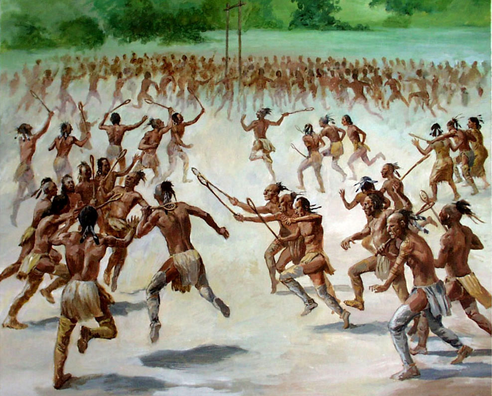
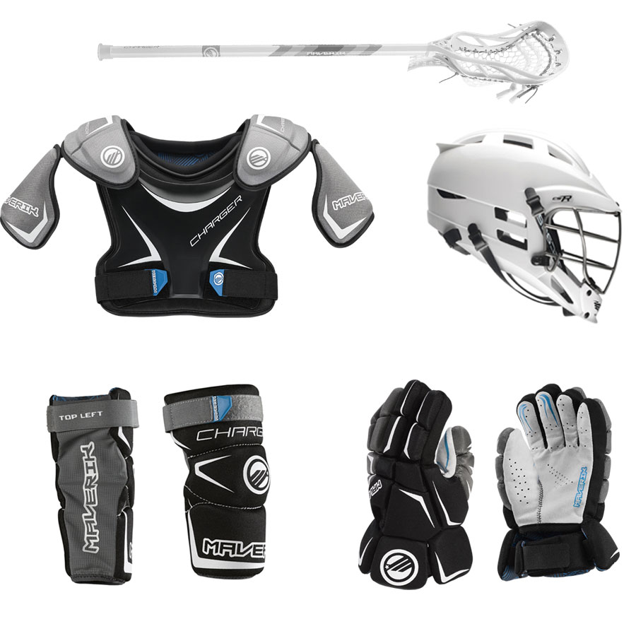
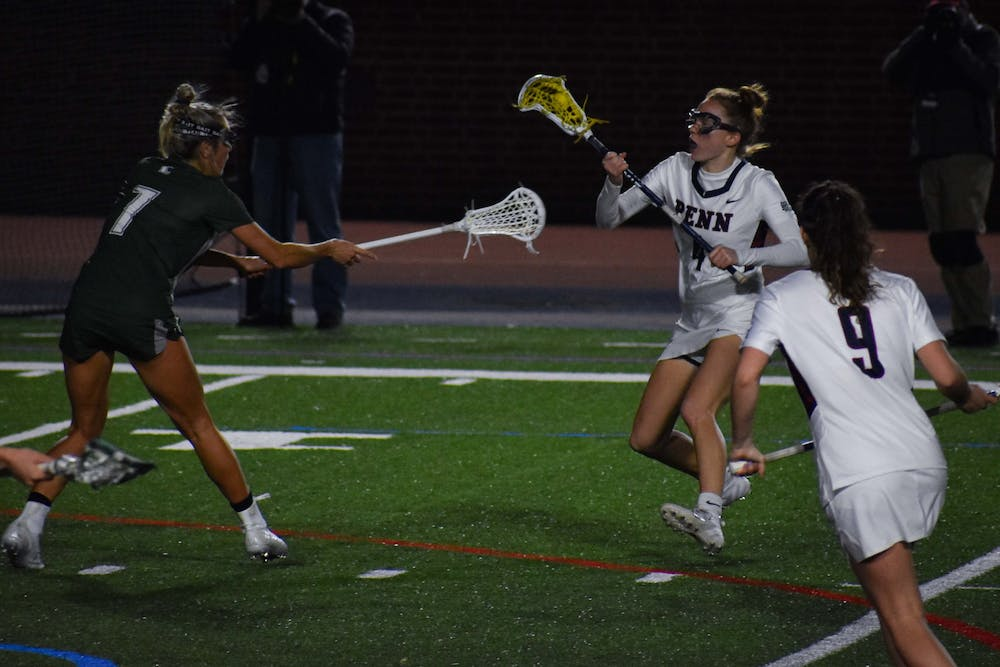

Lacrosse is a competitive sport in which two teams have to hit a small rubber ball into the opposing team’s goal with the use of stick-like equipment called a crosse. A crosse is a stick with a mesh at the end which is used to carry or catch the ball.
The prime objective is to get the ball into the crosse and toss the ball into the goal while dodging the opposing players and their goalie.
History
The origins of lacrosse come from a game that was played by Native Americans. It is one of the oldest team sports in the world. The games were played between different villages or tribes. The rules varied as well as the field of play. Goals were sometime miles apart. Sometimes a game was used to resolve disputes and could last days. Back then, each team consisted of approximately 100 to 1000 men on a large field that extended from about 500m to 3km in length.
Considering the number of players and their passion altogether, each match lasted for about two to three days straight from sunrise to sunset! They used a light wooden ball which was about 3 inches in diameter and the stick was a strong staff which was about 5ft long with a hoop at the end which was used to catch and pass on the ball.
Lacrosse was perceived as a sport of deep spiritual involvement as the sport befitted the spirit of combat in the players. That is why the sport played a distinctive role in their tribal community for many years.
The participants filled in for the role of warriors in the sport and winning meant that they had brought glory and honor to their community. They played it for their creator, hence the name The Creator’s Game.
The field and equipment
The field is 110 yards (about 100 metres) long and 60 yards wide. The goals are 80 yards apart. The goal posts are 6 feet (1.8 metres) high and the same distance apart, surmounted by a crossbar. The posts are fitted with a netting fastened to the ground behind the goal to stop passage of the ball after a successful shot. The goal-area lines, wing lines, and centre line act as restraints on the movements of certain players during play. Passing over a line into a prohibited area results in a penalty.
The ball is of sponge rubber, not less than 7.75 to 8 inches (19.7 to 20.3 cm) in circumference, and weighs 5 to 5.25 ounces (142 to 149 grams).
While the staff of the crosse was traditionally made of wood, usually hickory, contemporary crosses are often metal. The width of the crosse at the top, or head, may not be more than 12 inches nor is it to be less than 7 inches. The length of the stick may not be more than 6 feet nor less than 3 feet, with the exception being the goalkeeper’s stick, which may be of any length. Shoes have rubber, plastic, or metal cleats. Each player wears a helmet with a face mask or guard. Leather gloves protect the hands and wrists. Light pads are worn under the jersey to protect the shoulders and arms. The goalkeeper’s equipment differs slightly from that of other players and notably includes chest and throat protectors.
The game
Lacrosse is a very fast game, the object of which is to send the ball through the opponents’ goal as many times as possible and to prevent one’s opponents from scoring. A goal counts one point. Men’s teams usually have 10 players: the goalkeeper, three defensemen, three midfielders (one of whom is the centre), and three attackmen. During play each team must have at least four players in its defensive half of the field and no fewer than three in its offensive half of the field. This rule prevents excessive crowding around a goal when it is under attack. Conventionally, the goalkeeper and the three defensemen stay in the defensive half, while the three attackmen stay in the offensive half. The midfielders are permitted to roam the field, reinforcing the attack or defense as needed. There are two officials, a referee and a judge.
The game is divided into four periods of 15 minutes each, with intervals of one minute between the first and second quarters and between the third and fourth quarters and a 10-minute rest at halftime. If the score is tied at the end of regulation time, play is resumed after an intermission of five minutes for two four-minute periods, with a one-minute rest in between. Free substitution is allowed.
A player may run with the ball, pass it in any direction, and catch it, but—with the exception of the goalkeeper—he may not touch it with his hand. A player may kick the ball or bat it, but not into the opponents’ goal. A unique feature of the game is “cradling,” in which the player rapidly rotates the stick in half-turns while holding it nearly upright as he runs. The centrifugal force developed keeps the ball in the pocket of the crosse and also puts it in position for accurate throwing. Defensive players are allowed to poke the ballcarrier in the body with their sticks or slap at his stick to dislodge the ball. Blocking the ballcarrier—i.e., hitting him with the shoulder in an attempt to throw him off-balance or knock him down—is legal. For minor infractions of the rules the penalty is either suspension from the game for 30 seconds or an exchange of the ball. In the case of personal fouls of a more serious nature—for example, an illegal block—the offender is suspended from the game for one, two, or three minutes, and his team plays a man short for that period of time. Other serious fouls include tripping, slashing, and unnecessary roughness.
Play is started at the beginning of each quarter and after the scoring of a goal with a face-off at midfield, as in hockey. The two centres face each other, the heads of their sticks touching the ground. The referee places the ball between the two crosses and at his signal each player tries to gain control of the ball. He may keep it himself or bat it to a teammate. The player with the ball tries to advance it toward the opposing goal by running or passing to a teammate in the open. The defenders try to harry him into making a poor pass, intercept the ball when it is thrown, knock the ball from his stick, or occasionally knock it loose with a block. Players are in constant movement: dodging, hurling, or flipping the ball to a teammate; scooping up the ball while running at full speed; or making quick, deceptive shots at the goal. A unique ceremony at the beginning of the game consists of the teams lining up in the centre of the field opposite each other. Each player introduces himself to his particular opponent, shakes hands, and wishes him luck.